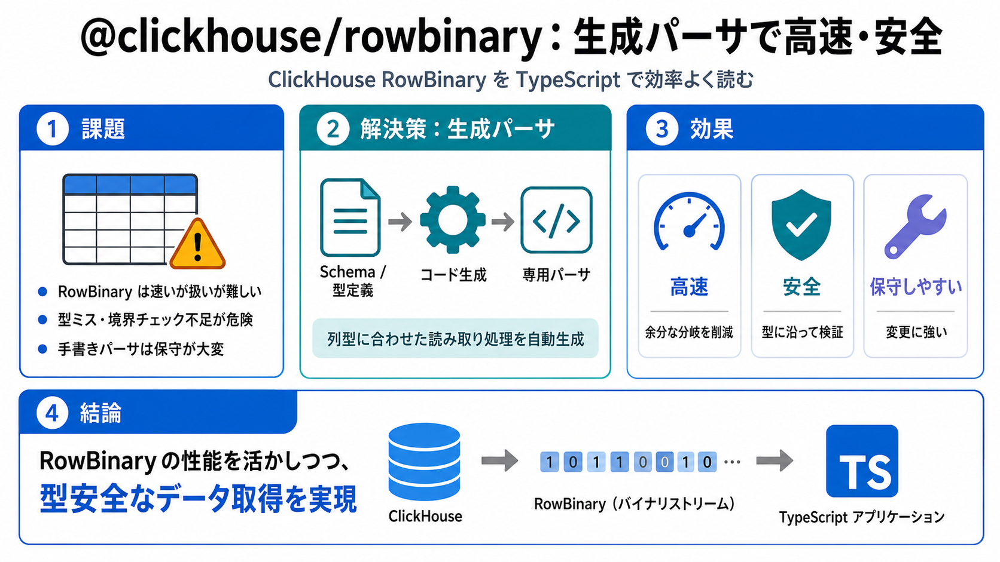

@clickhouse/rowbinary: when your library is also a parser compiler | ClickHouse
# @clickhouse/rowbinary: when your library is also a parser compiler. We've released @clickhouse/rowbinary, a Node.js re…

# @clickhouse/rowbinary: when your library is also a parser compiler. We've released @clickhouse/rowbinary, a Node.js re…
This skill generates both directions of the wire format: readers (decode bytes → values) and writers (encode values → by…
# ClickHouse/agent-skills. The official Agent Skills for ClickHouse. These skills help LLMs and agents to adopt best pra…
Use this skill whenever a. ClickHouse skills are AI coding skills published by ClickHouse. They are SKILL.md files that …
# Introducing ClickHouse Agent Skills. We’re releasing the official ClickHouse Agent Skills: a set of open-source, packa…